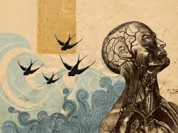
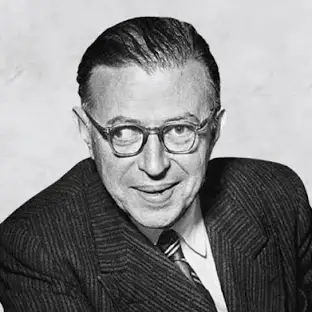

O que é o Existencialismo?
O Existencialismo é uma corrente filosófica que surgiu na Europa no século XX, focando na liberdade, responsabilidade individual e na angústia da existência humana.
Principais Ideias Existencialistas:
- Liberdade: o ser humano é livre para fazer escolhas e construir seu próprio destino.
- Angústia: vem da responsabilidade de escolher por conta própria, sem garantias externas.
- Existência antes da essência: primeiro existimos, depois damos sentido à nossa vida com nossas ações.
- Autenticidade: viver de acordo com sua própria verdade, e não com padrões impostos.
Principais Autores:
- Jean-Paul Sartre: destacou a liberdade radical do ser humano.
- Simone de Beauvoir: aplicou o existencialismo à luta das mulheres e às questões sociais.
- Albert Camus: discutiu o absurdo da vida e a necessidade de criar sentido.
“O homem está condenado a ser livre.” – Jean-Paul Sartre